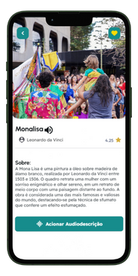

Tornando a Cultura Acessível Para Todos
O Inclusiva é um aplicativo inovador que facilita o acesso a cultura e a autonomia para pessoas com deficiências, com foco em limitações auditivas e visuais, garantindo que todos possam ter acesso igualitário à espaços culturais.
Lista de espera
